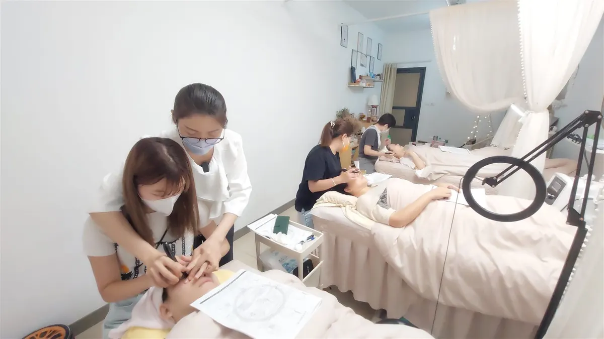
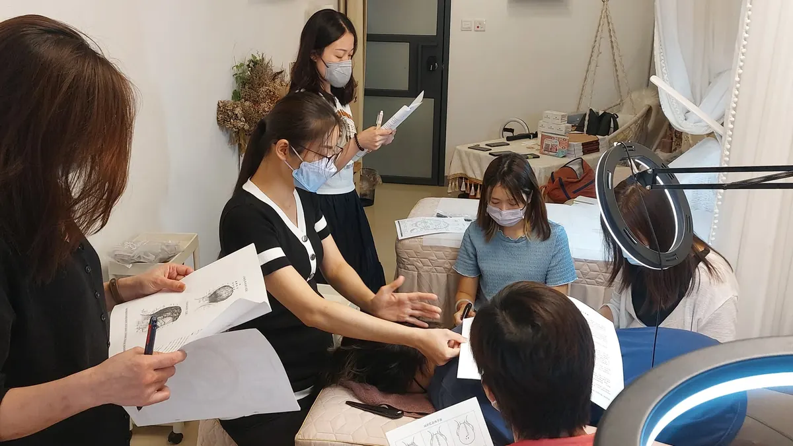
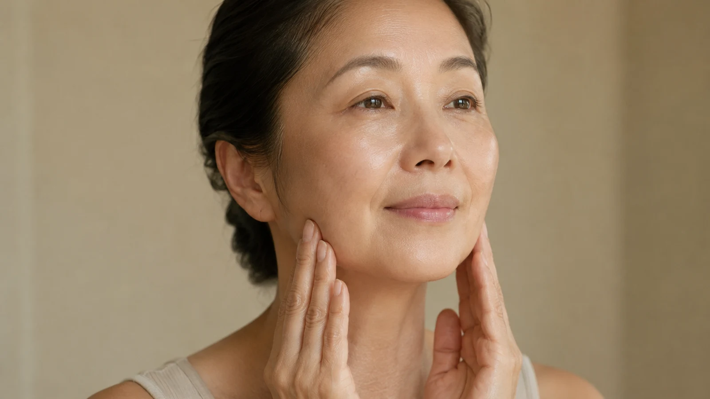

The Bojin Journal · Myths & real talk
Can Bojin Make Your Face Saggier? An Honest Answer

You want to work on your face, so you reach for a tool and start to massage. Then a small worry stops your hand. If I keep pushing and pulling at my skin, am I going to stretch it out and end up saggier than when I started? It is one of the most sensible questions a woman over 55 can ask, and almost nobody answers it honestly. So let me answer it the way I answer it in my own classroom.
A Taiwan-based teacher Remember: this is a gentle, supported self-care observation you can test on one side of your face—never a forceful press or medical treatment.
The short version: done with care, bojin will not make your face saggier. Done carelessly, any facial massage can tug at skin that would rather be left alone. The difference is not luck. It is method.
Why faces actually sag
Before we blame the tool, let us be clear about what really loosens a face over time. Skin thins and loses the springiness it had at 30. The fat pads that once sat high on your cheeks slide downward. The bone underneath quietly changes shape. Gravity pulls on all of it, every day, for decades. That is the real story of a softer jawline, and a stone or a stick moving over your skin for five minutes does not cause any of it.
So when a face looks a little more tired or heavy, the usual culprit is not too much facial care. More often it is tension pulling the tissue in the wrong direction, plus the slow aging every one of us is doing. Bojin works on the tension part. It cannot pause the clock, and I would never tell you it can.
Where the worry comes from
The fear is not silly. It comes from watching people do it wrong. You have seen the videos where someone drags a stone hard across dry skin, cheek stretching like taffy under the edge. That kind of yanking, on skin with no slip and far too much force, is exactly what you should not do. The worry is real. The technique in those videos is the problem, not the idea of touching your face.
This is the whole reason bojin is taught as a method and not just a tool. Gua sha hands you a stone. A method tells you the order to work in, the angle to hold, the position on your face, and the pressure that actually helps. Different jobs, not a contest. When those four things are right, your skin is supported, not dragged, and the "will this stretch my face" question mostly answers itself.

The pressure that keeps you safe
Get the pressure right and most of the risk disappears. Too heavy, and you bruise and tug at tissue that cannot take it. Too light, and you never reach the tension you came for, so nothing happens and you push harder out of frustration, which is how people end up dragging. Not featherlight, not forceful. The right pressure is enough to reach the tension underneath and never enough to hurt. If your skin is stretching or reddening under the tool, you have your answer: ease off and add more slip.
Five ways to make sure you never stretch your skin
Use a little oil or your regular moisturizer for glide. You can practice all five with the gua sha stone you already own, or the broad edge of a stainless steel bojin stick.

Always use slip
A few drops of facial oil or your usual moisturizer let the tool glide instead of grip. Never work on dry skin.
Support as you go
Rest two fingers of your free hand just ahead of the tool so the skin is held, not pulled along behind the edge.
Work upward and outward
Move from the center of your face toward your ears and hairline, in the direction that lifts rather than the direction that drags down.
Keep the angle low and the passes short
Lay the broad edge of the tool fairly flat against your skin, and do three or four calm passes over a spot rather than twenty frantic ones.
Stop while it still feels good
Five to ten minutes is plenty. More is not better, and tired hands get heavy and careless.
An honest expectation
Here is the truth I give every student. Bojin will not lift a face that has descended over the years, and it will not undo aging. What careful, regular work can do is ease the tension that makes a face look heavier than it is, so you look a little more rested and awake for a while. Those changes are gentle and temporary. They fade, and they build back with consistency. Anyone promising a permanent lift from a handheld tool is selling you something.
Your worry was the right instinct. It just points at the wrong culprit. Careless dragging can stress skin, so we don't do that. Supported, comfortable, unhurried work does not, and that is the whole method in one sentence.
Quick answers
Does massaging my face daily stretch the skin?
Not when you use slip, support the skin with your free hand, and keep the pressure comfortable. Dragging hard on dry skin is what stresses skin, and that is the habit to drop.
Which direction should I work so I don't pull my face down?
Center outward, and generally upward toward the ears and hairline. You are guiding tissue in the lifting direction, never dragging it down toward the jaw.
Can bojin reverse sagging that is already there?
No. Sagging comes from aging skin, shifting fat pads, and bone change. Bojin eases tension and gives a temporary, rested look. It does not reposition tissue the way a medical procedure does. See what bojin can and cannot do.
How often is safe?
Most days is fine at five to ten minutes. Your skin, not a schedule, is the guide. If it looks red or feels tender, give it a rest day.
Want the safe-pressure cheat sheet?
I put the "reach the tension, never hurt" pressure guide and the supporting-hand trick into one short printable page, the same one I hand new students so they never have to worry about this again.
Watch the free 3-min videoYu-Ting Lan is a Taiwan-based international bojin instructor and the founder of Héhé Studio. She has taught her bojin method to more than a thousand students, from complete beginners to grandmothers, across Taiwan, Hong Kong, and Malaysia.